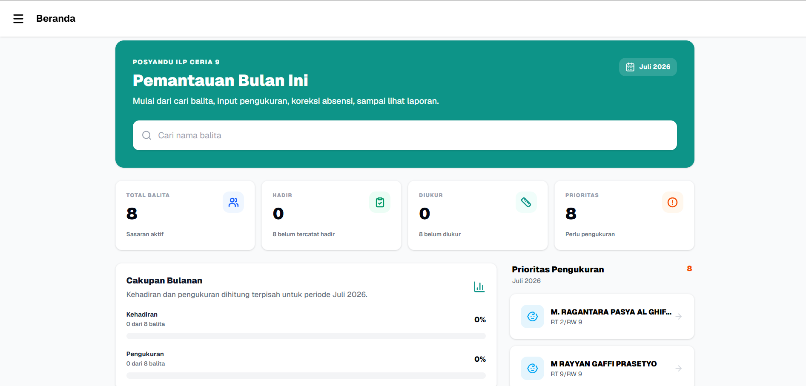

01 / Health Tech
Posyandu Pintar
Health insights without the complexity. An AI-assisted platform for toddler and maternal monitoring, designed around developmental metrics and clearer care workflows.
Next.jsTypeScriptAI AnalyticsTailwind
